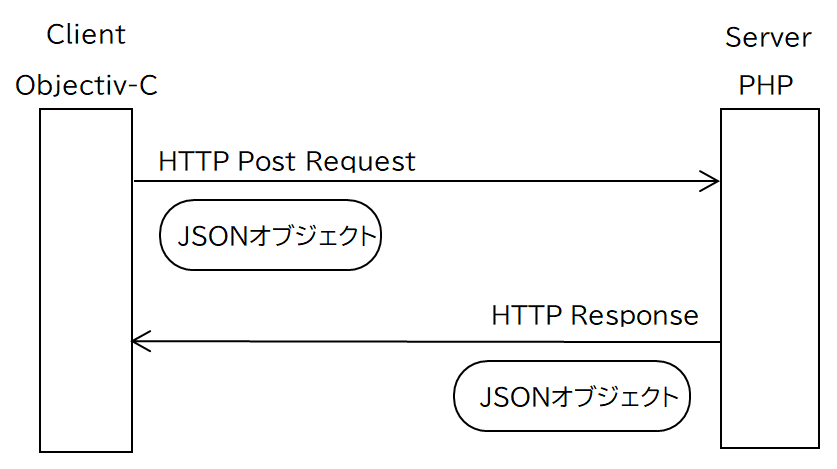
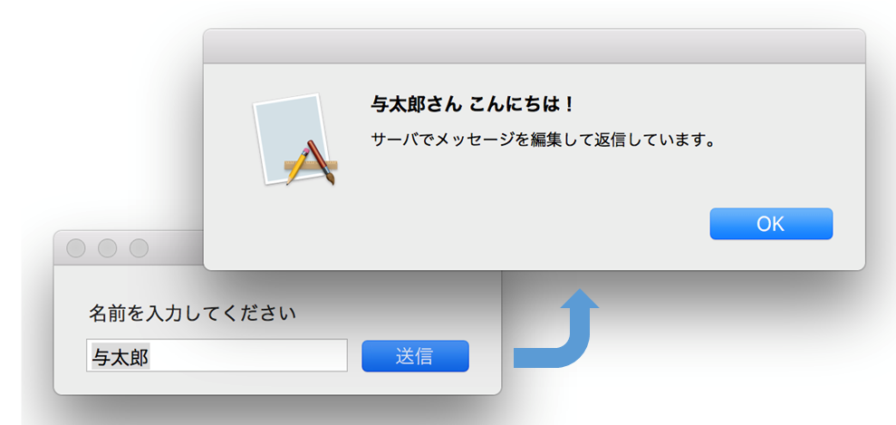
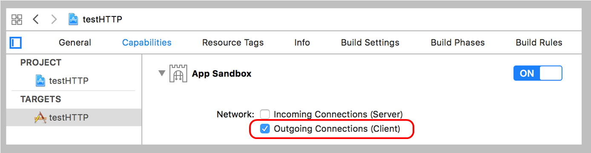
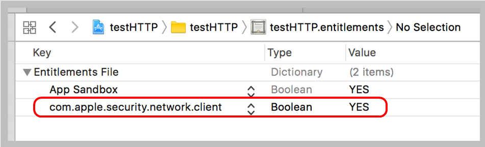

サーバと同期的なHTTP通信を行う
処理の概要
クライアントとなるアプリケーションは、入力データを元にPOSTリクエストを作成しサーバに送信する。POSTパラメータはJSONオブジェクトとする。
サーバ側の処理はPHPスクリプトとする。受信したPOSTパラメータを元にレスポンスを返信する。レスポンスデータはJSONオブジェクトとする。
レスポンスを受信したアプリケーションはJSONオブジェクトを読み込み、所定の処理を行う。


以上の処理を必要最小限のコードを作成してみた
サーバ側のPHPスクリプト
App Sandboxの設定
App SandboxをONにしている場合、アプリケーションがHTTP通信のクライアントとして動作するために、Network設定のOutgoing Connections (Client) のチェックをYESにする必要がある。これを行わないと送信が失敗する。なお、App SandboxをOFFにして入れば通信は可能である。

App Sandboxを設定すると、Appバンドルの中に "プロダクト名.entitlements" という名前のXMLファイルが自動的に作成される。システムが実際に参照するのはこれである。
